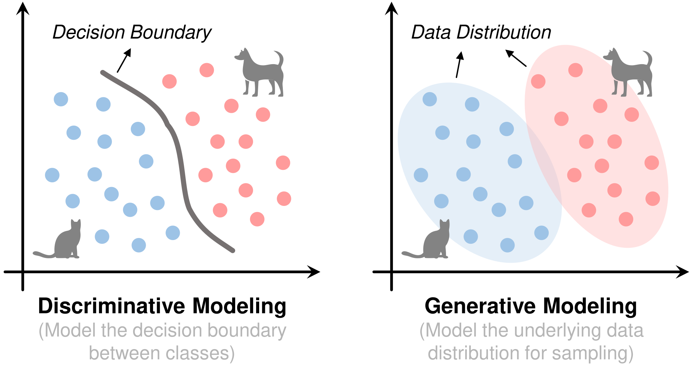
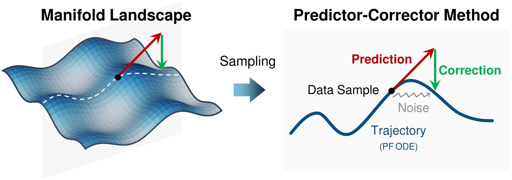
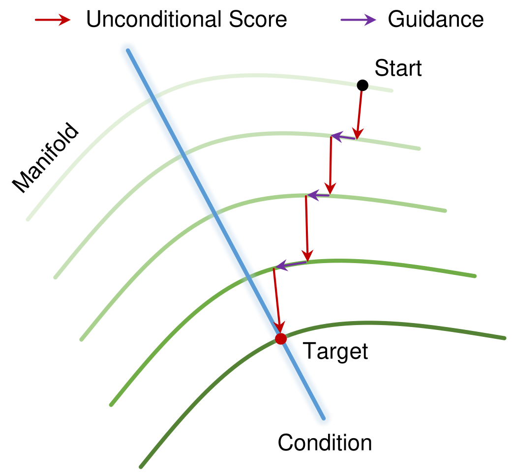
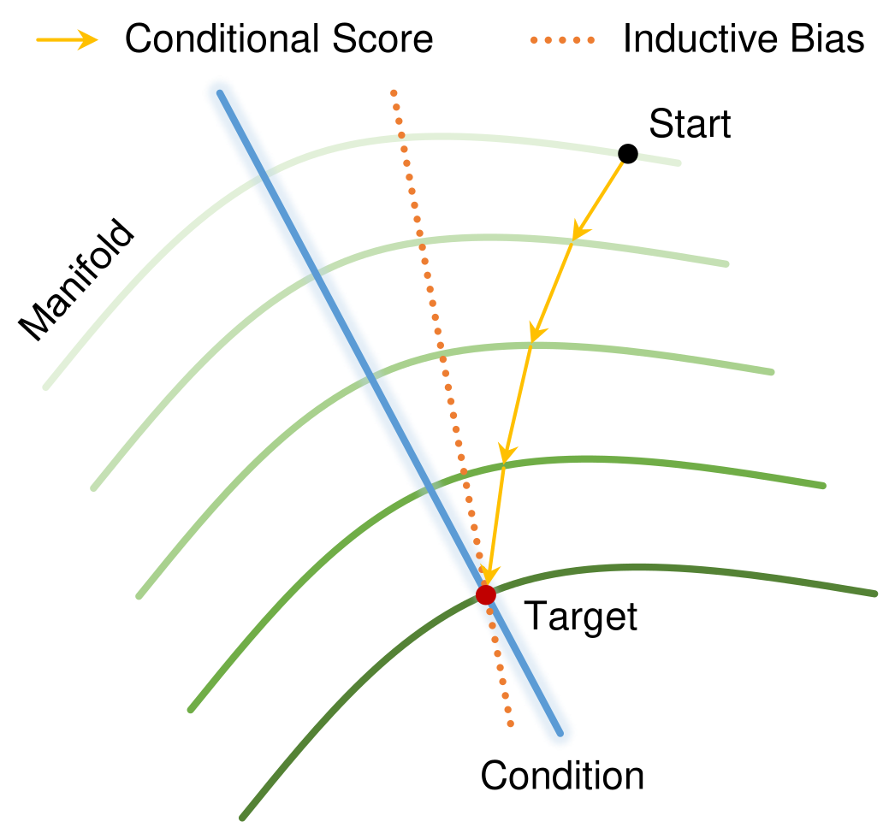

Generative AI Meets 6G and Beyond: Diffusion Models for Semantic Communications
1Beijing University of Posts and Telecommunications (BUPT)
2Shanghai Jiao Tong University (SJTU)
3University of Shanghai for Science and Technology (USST)
4Tsinghua University (THU)
5Hong Kong University of Science and Technology (HKUST)
IEEE Communications Surveys & Tutorials (COMST), Under Review
TL;DR
Preliminaries

Fundamentals of Diffusion Models
Score Matching & Langevin Dynamics
Langevin Dynamics

Score-Based Modeling with SDEs

Probability Flow ODEs & Solvers

Conditional Diffusion Models

Inference-time Conditioning
Classifier Guidance (CG)
Estimator Guidance (DPS & BlindDPS)

Training-time Conditioning
Classifier-Free Guidance (CFG)
1.0
Efficient Diffusion Methods
Dimensionality Reduction
Knowledge Distillation
Consistency Models
Structure Pruning
Cache Reuse
Flow Matching